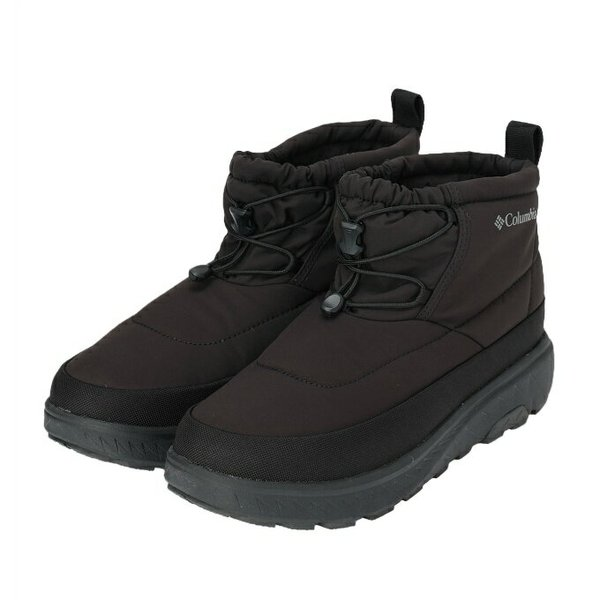
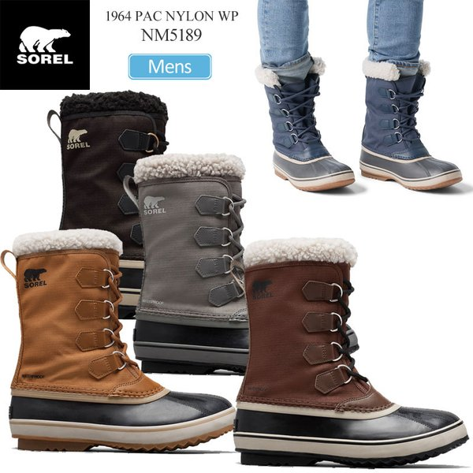
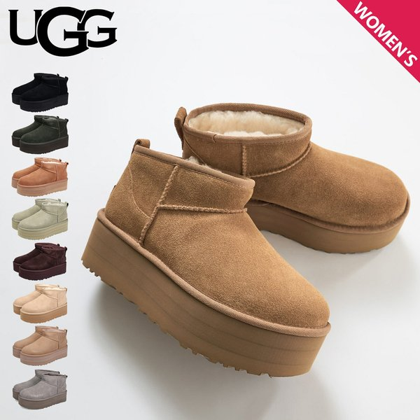
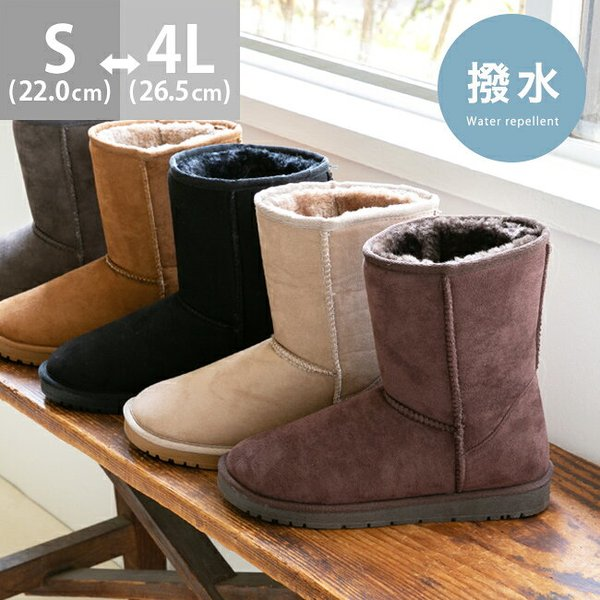
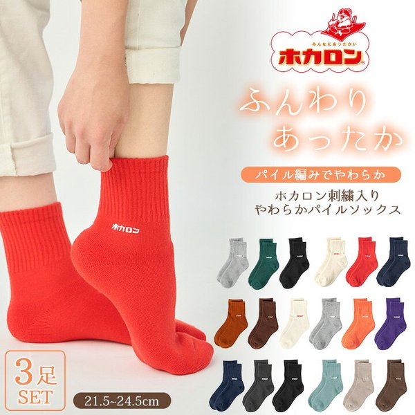
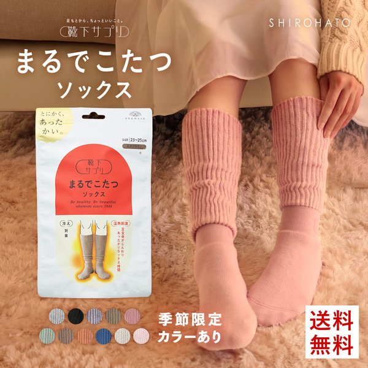
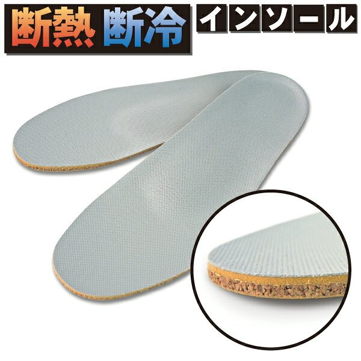
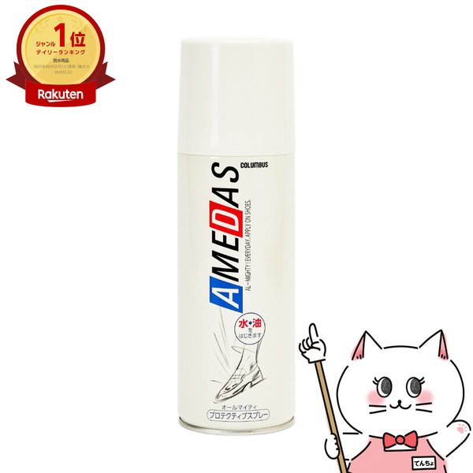
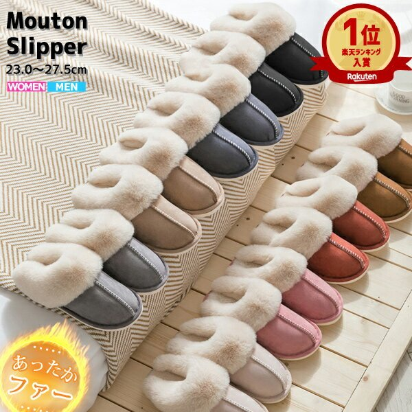

【2026年冬】足元から極暖＆雪対策！防水スノーブーツ・ムートンブーツ＆あったか靴下おすすめ10選
冬の足元は、外出の快適さをいちばん大きく左右します。雪の日は染み込む冷たさと滑りやすさ、晴れた日は地面から伝わる冷気。靴を1足変えるだけで、通勤の30分が別物になります。
選ぶ軸は、雪の多さと歩く距離です。毎日雪道を歩くなら防水のスノーブーツ、街中中心ならムートンブーツや撥水タイプ、室内では厚手の靴下とルームシューズ。靴の中は断熱インソールで底冷えを抑え、履く前に防水スプレーをかけておくと、1シーズン持ちが変わります。
本記事では、楽天市場で人気・高評価の防水スノーブーツ・ムートンブーツ＆あったか靴下10選を、実売価格とレビュー評価つきで写真付き紹介します。
- おすすめ10選 スペック・特徴比較表
- BEST 1｜ヌプシ ブーティ ウォータープルーフ VII ショート（NF52273）
- BEST 2｜イエローテイル ショーティー ウォータープルーフ（YU2743）
- BEST 3｜1964 パック ナイロン ウォータープルーフ（NM5189）
- BEST 4｜クラシック ウルトラ ミニ プラットフォーム（厚底）
- BEST 5｜ムートンブーツ ショート（2cmヒール・撥水・防滑）
- BEST 6｜履くホカロン あったか靴下 3足セット（ミニクルー）
- BEST 7｜まるでこたつソックス あったかハイソックス（23-25cm／25-27cm）
- BEST 8｜断熱・断冷インソール（男女兼用・1足入り）
- BEST 9｜アメダス 防水スプレー 420ml
- BEST 10｜ルームシューズ もこもこ（かかと付き・滑り止め・洗える）
- 【読者負担0円】買わなくても得する無料サービス
- まとめ：冬のスノーブーツ＆あったか靴下10選の選び方
| 順位 | 商品名 | ブランド | 最大の特徴・おすすめ理由 | 総合評価 |
|---|---|---|---|---|
| BEST 1 | ヌプシ ブーティ ウォータープルーフ VII ショート（NF52273） | THE NORTH FACE | 防水仕様で雪や雨の日も履ける | 5.00 |
| BEST 2 | イエローテイル ショーティー ウォータープルーフ（YU2743） | Columbia | オムニヒートの反射保温で暖かい | 4.70 |
| BEST 3 | 1964 パック ナイロン ウォータープルーフ（NM5189） | SOREL | 防水ナイロン＋フェルトインナーの二重構造 | 4.54 |
| BEST 4 | クラシック ウルトラ ミニ プラットフォーム（厚底） | UGG | シープスキンで保温力が高い | 4.76 |
| BEST 5 | ムートンブーツ ショート（2cmヒール・撥水・防滑） | OUTLET SHOES | 3,000円台で手に入る | 4.29 |
| BEST 6 | 履くホカロン あったか靴下 3足セット（ミニクルー） | ホカロン | 3足セットで1足あたり400円を切る | 4.59 |
| BEST 7 | まるでこたつソックス あったかハイソックス（23-25cm／25-27cm） | こたつソックス | ふくらはぎまで覆うハイソックス | 4.70 |
| BEST 8 | 断熱・断冷インソール（男女兼用・1足入り） | Shoesfit.com | 既存の靴に入れるだけで冷え対策になる | 4.75 |
| BEST 9 | アメダス 防水スプレー 420ml | コロンブス | 靴にも衣類にも使える | 4.77 |
| BEST 10 | ルームシューズ もこもこ（かかと付き・滑り止め・洗える） | GOSSIP STAR | かかと付きで脱げにくい | 4.48 |
ヌプシ ブーティ ウォータープルーフ VII ショート（NF52273）

ノースフェイスのヌプシシリーズのショートブーティ。ナイロンアッパーに防水・撥水加工を施し、中綿で保温しています。雪の日の通勤や、朝の冷え込みが厳しい日の外出に。ダウンジャケットと同じ「ヌプシ」の見た目なので、冬のコートと合わせやすいのも利点です。楽天市場での実売価格は約16,786円（2026年11月時点）。
- 防水仕様で雪や雨の日も履ける
- 中綿入りで真冬でも足元が冷えにくい
- ショート丈で脱ぎ履きしやすい
- 1万6千円台と、スニーカーより価格は高め
イエローテイル ショーティー ウォータープルーフ（YU2743）

コロンビアの定番スノーブーツ「イエローテイル」のショートモデル。オムニヒートの反射保温で熱を逃がさず、アッパーは防水仕様です。くるぶし丈なので、雪の多い日でも街歩きの邪魔になりにくく、デニムにもスカートにも合わせられます。楽天市場での実売価格は約10,821円（2026年11月時点）。
- オムニヒートの反射保温で暖かい
- 防水仕様で雪・雨に対応
- 1万円台でブランド物を選べる
- アウトドア寄りのデザインで、きれいめの服装には合わせにくい
1964 パック ナイロン ウォータープルーフ（NM5189）

1964年の創業モデルを受け継ぐSORELの定番、1964パックのナイロン仕様。防水ナイロンのアッパーに、取り外せるフェルトのインナーブーツを重ねた二重構造です。雪が積もる地域で、靴の中まで濡らさずに歩きたい人向けの一足です。楽天市場での実売価格は約14,850円（2026年11月時点）。
- 防水ナイロン＋フェルトインナーの二重構造
- 雪道でもグリップするソール
- 紐で足首までフィットさせられる
- 見た目より重く、履き慣れるまで歩きにくさを感じる
クラシック ウルトラ ミニ プラットフォーム（厚底）

UGGのシープスキンブーツを厚底に仕立てたモデル。足首丈のミニ丈ながら、ソールが厚いので雪の積もった道でも足元が濡れにくく、脚長に見えます。素足で履ける保温力があり、冬のコートスタイルの主役になります。楽天市場での実売価格は約24,750円（2026年11月時点）。
- シープスキンで保温力が高い
- 厚底で雪の日の水はねを避けやすい
- 定番デザインでコートに合わせやすい
- 2万4千円台で、毎日履くには価格が高い
ムートンブーツ ショート（2cmヒール・撥水・防滑）

3,000円台で買えるショート丈のムートンブーツ。撥水加工と防滑ソールを備え、22.0cmから26.5cmまでサイズを展開しています。本革やシープスキンにこだわらず、1シーズン気軽に履きつぶしたい人に向いています。楽天市場での実売価格は約3,499円（2026年11月時点）。
- 3,000円台で手に入る
- 撥水・防滑ソールで雨や雪の日も履ける
- 22.0〜26.5cmとサイズ展開が広い
- 合皮素材のため、数年単位で履き続けるのは難しい
履くホカロン あったか靴下 3足セット（ミニクルー）

吸湿発熱のパイル地で編んだ「履くホカロン」の靴下。3足セットで、1足あたり400円を切ります。くるぶし丈のミニクルーなので、スニーカーやブーツの中でもかさばりません。洗い替えをまとめて確保したい人に向いています。楽天市場での実売価格は約1,146円（2026年11月時点）。
- 3足セットで1足あたり400円を切る
- 吸湿発熱パイルで足元がぽかぽかする
- 洗い替えをまとめて確保できる
- パイル地が厚く、細い靴には入れにくい
まるでこたつソックス あったかハイソックス（23-25cm／25-27cm）

履いているだけで足元が温かいと評判のハイソックス。ふくらはぎまで覆う丈で、冷えが気になる人に向いています。レディースとメンズのサイズがあり、部屋履きにも、ブーツの下に重ねるのにも使えます。楽天市場での実売価格は約1,980円（2026年11月時点）。
- ふくらはぎまで覆うハイソックス
- レディース・メンズの2サイズ展開
- レビュー5,000件超の定番
- 厚手なので、ぴったりの靴には合わせにくい
断熱・断冷インソール（男女兼用・1足入り）

靴底からの熱と冷気を遮断するインソール。アルミ系の遮熱層を重ねた3層構造で、冬は冷たい地面の冷気を、夏は照り返しの熱を防ぎます。作業靴や安全靴、立ち仕事のスニーカーに入れるだけで足元の環境が変わります。楽天市場での実売価格は約2,200円（2026年11月時点）。
- 既存の靴に入れるだけで冷え対策になる
- 作業靴・安全靴・スニーカーに使える
- 男女兼用でサイズ調整もできる
- 厚みがあるため、きつめの靴には入れにくい
アメダス 防水スプレー 420ml

革靴やスエード、布地まで使えるフッ素系の撥水スプレー。雪や雨の日に、ブーツやスニーカーが染み込むのを防ぎます。420mlの大容量で、靴だけでなくコートやバッグにも使えるので、冬の前に1本あると重宝します。楽天市場での実売価格は約1,869円（2026年11月時点）。
- 靴にも衣類にも使える
- 420mlの大容量でたっぷり使える
- レビュー196件・評価4.77の人気品
- スプレー後は換気をしながら乾かす必要がある
ルームシューズ もこもこ（かかと付き・滑り止め・洗える）

ボア素材のあったかルームシューズ。かかとが付いているので脱げにくく、滑り止め付きでフローリングでも歩きやすい設計です。洗濯できるので、冬の間ずっと履いても清潔に保てます。男女兼用で、来客用にも使えます。楽天市場での実売価格は約1,490円（2026年11月時点）。
- かかと付きで脱げにくい
- 滑り止め付きで床でも滑りにくい
- 洗濯できるので清潔に保てる
- ボアは乾きにくいので、洗濯後は風通しのよい場所で乾かす
この記事の商品を買う前に、まずは無料で得する選択肢をチェック。どれも登録・利用は0円で、無料期間中に解約すれば料金はかかりません。読みたい雑誌がある人、ポイントを貯めたい人、アンケートなら気軽という人、それぞれに合うものを選べます。
初回31日無料・無料期間中に解約すれば0円 → 楽天ポイントモール｜登録無料で毎日ポイ活
買い物なしでもポイントが貯まる無料サービス → 楽天インサイト｜アンケートに答えてポイント
登録無料・すきま時間のアンケートで貯まる → 楽天カード｜年会費永年無料
新規発行・年会費ずっと0円 →
4つのサービスの違いと使い分けは「出費0円で得する！買わずにポイントが貯まる無料サービス厳選4選」でまとめています。
💡 まとめ：冬のスノーブーツ＆あったか靴下10選の選び方
冬の足元は、外履きと室内用を分けて揃えると快適さが跳ね上がります。雪の多い地域なら防水スノーブーツを1足、街中中心ならムートンブーツか撥水ショートブーツを。そのうえで、靴下は厚手のものを複数、室内はかかと付きのルームシューズを。靴の中には断熱インソールを入れて底冷えを防ぎ、履く前に防水スプレーをかけておけば、雪の日も足元から冷えません。
楽天市場では「5と0のつく日」や「お買い物マラソン」などのキャンペーンに合わせて購入すると、ポイント還元が最大化してお得に手に入ります。ぜひチェックしてみてくださいね。